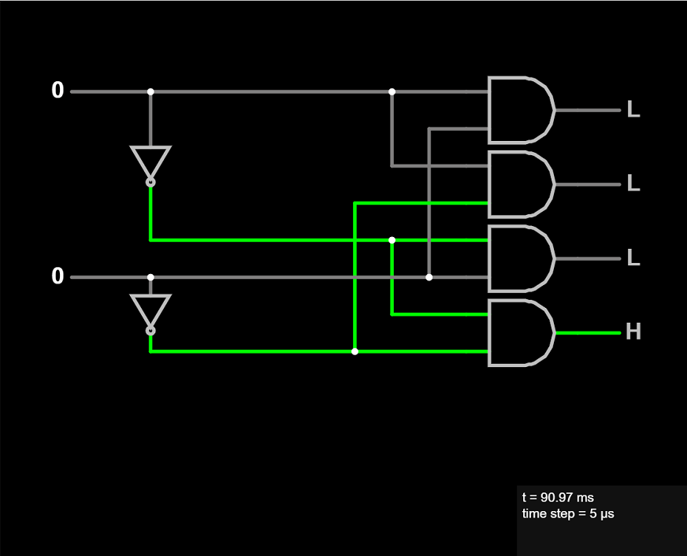

Digital Electronics Tutorial (C) by James Ross
The idea behind this tutorial is to learn digital electronics from the very basics through where we could design our own computer from scratch. Long term goals are to create a simple computer w/ a 4-bit CPU using basic logic and we'll create one or more Single Board Computers (SBC) using readily available (retro) CPU's and components. For sure we'll create a HD6309 based computer compatible w/ the CoCo3!!
There are two main classes of digital circuits - Combinational and Sequential.
- Combinational Logic
- 1-of-2,4,8,16 Decoders
- 2-to-1, 4-to-2, 3-to-8, 4-to-16 Encoders
- xxx
- Sequential Logic